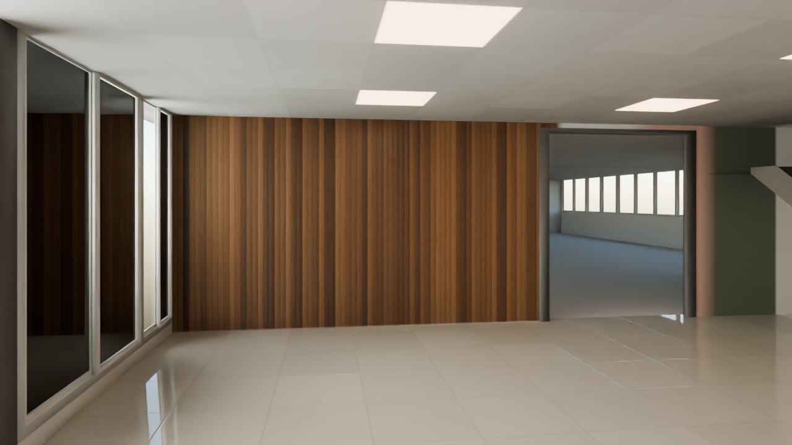
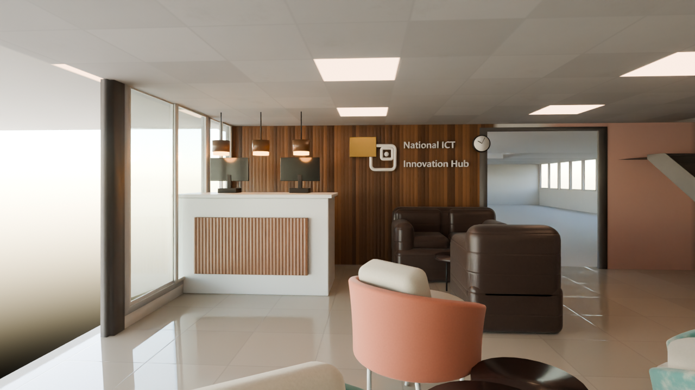
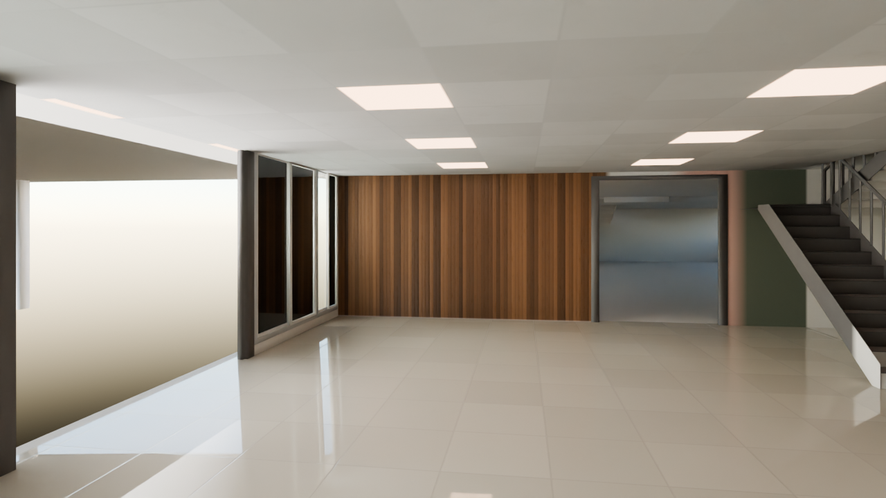
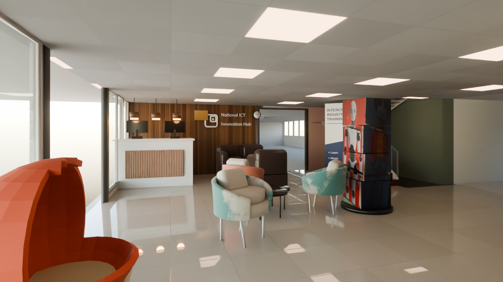
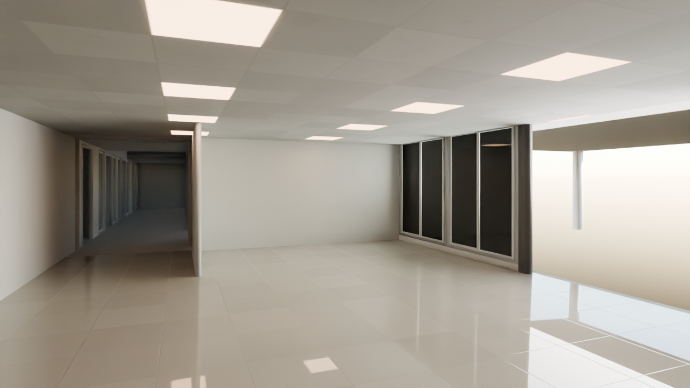
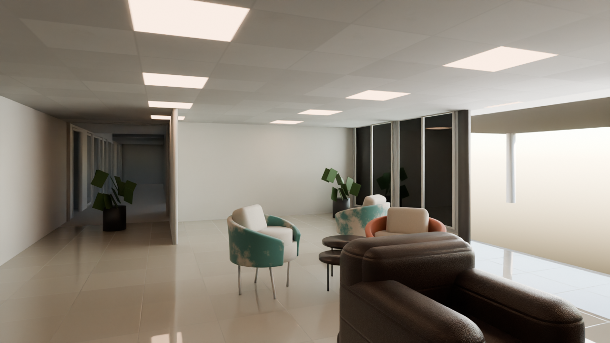
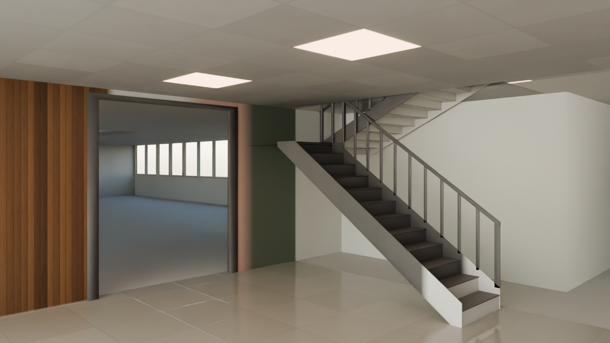
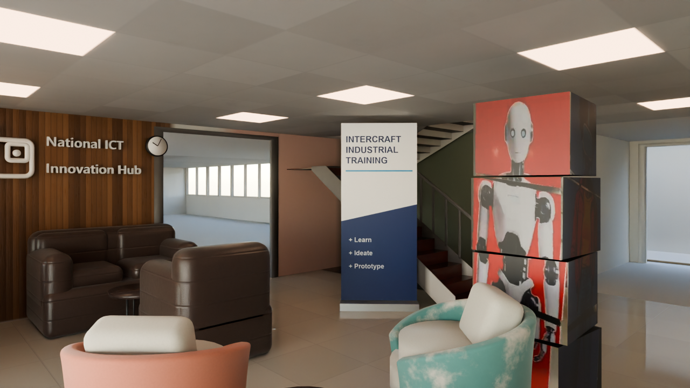
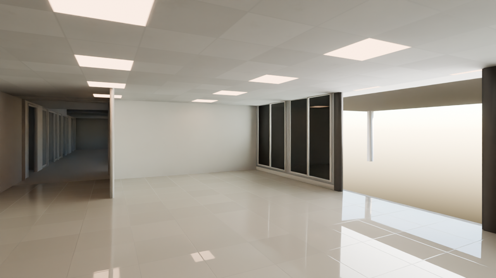
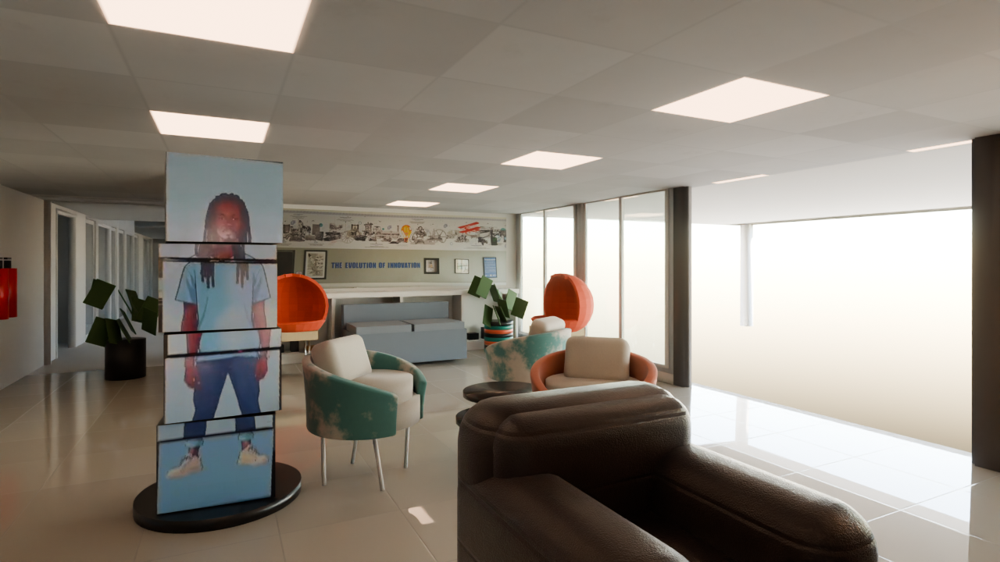

Upper floor — walk the whole first floor → Upper offices →
Whole building — walk through every room → Reception 360 tour → Outside → Balcony → Cafeteria → Upper Founder Space → Upper floor → Stairs →
Every room · status →New rooms (2026-10-20; typical layout where there are no photos): Gents Room (first floor) · Ladies Room (first floor) · UJ Connect · Kitchen · Meeting Podium 1 (ground floor) · Meeting Podium 2 (first floor) · Servers Room (Cloud Centre) · Startup Space · Janitor’s Room · Office Space 1 · Io Tech · Podcast Room (The Pod) · VIP Suite
Generated from the contents of output/final/. Each angle appears twice:
shell, the supplied model with photoreal materials and lighting only, and furnished,
the same scene with furniture, signage and fittings added. The original 15 meshes are untouched in
both, and no render contains people.
10 draft 13 of 13 panoramas
Square to the counter and the timber slat wall, with the fabricated signage, the certificate, the clock and three warm pendants.

Shelldraft
FurnisheddraftThe full 9.25 x 6.60 m room along its north-west to south-east diagonal, north glazing receding on the left.

Shelldraft
FurnisheddraftLooking west from the doorway that connects to Founder Space 1.

Shelldraft
FurnisheddraftThe south-east corner stair, salmon behind it and olive on the perpendicular return, with the granite floor band at its foot.

Shelldraft
FurnisheddraftAcross the lounge seating toward the north glazing.

Shelldraft
FurnisheddraftDrag to orbit, scroll to zoom.
Loading the 3D model…
.blend files hold the real scene. The viewer needs the page served over http://, not opened as a file:// path.Every room rendered so far, each with its own page (photos, drafts and finals, differences, free-camera walk).
Equirectangular panoramas at standing eye height, 1.6 m.
13 of 13 panoramas rendered. Open the virtual tour →
First-person walkthrough of the GLB. Simple colours; the photoreal look is in the renders and the tour.
Everything this page shows, straight from disk, so you can check the page matches the folder.
| File | Kind | Size | Modified |
|---|---|---|---|
| 01_desk_frontal_furnished.png | DRAFT | 906.9 KB | 2026-10-01 09:01 |
| 01_desk_frontal_shell.png | DRAFT | 870.2 KB | 2026-10-01 08:26 |
| 02_room_wide_furnished.png | DRAFT | 931.9 KB | 2026-10-01 08:49 |
| 02_room_wide_shell.png | DRAFT | 857.4 KB | 2026-10-01 08:28 |
| 03_from_doorway_furnished.png | DRAFT | 930.6 KB | 2026-10-01 08:29 |
| 03_from_doorway_shell.png | DRAFT | 853.1 KB | 2026-10-01 08:30 |
| 04_stair_corner_furnished.png | DRAFT | 919.9 KB | 2026-10-01 08:51 |
| 04_stair_corner_shell.png | DRAFT | 886.2 KB | 2026-10-01 08:32 |
| 05_lounge_glazing_furnished.png | DRAFT | 935.6 KB | 2026-10-01 08:33 |
| 05_lounge_glazing_shell.png | DRAFT | 857.7 KB | 2026-10-01 08:35 |
| lib/model-viewer.min.js | viewer library (offline) | 913.3 KB | 2026-10-01 08:55 |
| model_reception_furnished.glb | 3D model | 1.6 MB | 2026-10-01 08:55 |
| rooms/auditorium/index.html | Auditorium page (1 draft, 2 final) | 14.6 KB | 2026-10-23 03:42 |
| rooms/founder_space/index.html | Founder Space 1 page (3 draft, 1 final) | 13.8 KB | 2026-10-23 03:42 |
| rooms/iot_lab/index.html | IoT Lab page (8 draft, 0 final) | 14.6 KB | 2026-10-23 03:42 |
| rooms/kacyber/index.html | KaCyber page (2 draft, 4 final) | 11.3 KB | 2026-10-23 03:42 |
| rooms/smart_ideas/index.html | Smart Ideas page (2 draft, 2 final) | 14.2 KB | 2026-10-23 03:42 |
| rooms/visual_space/index.html | Visual Space page (3 draft, 1 final) | 13.3 KB | 2026-10-23 03:42 |
| rooms/washroom_gents/index.html | Gents Washroom page (0 draft, 2 final) | 10.7 KB | 2026-10-23 03:42 |
| rooms/washroom_ladies/index.html | Ladies Washroom page (0 draft, 2 final) | 10.8 KB | 2026-10-23 03:42 |
| tour/index.html | tour page | 11.9 KB | 2026-10-02 00:41 |
| tour/nodes.json | tour page | 2.9 KB | 2026-10-01 23:28 |
| tour/p00.png | panorama | 1.8 MB | 2026-10-01 23:53 |
| tour/p01.png | panorama | 1.9 MB | 2026-10-01 23:40 |
| tour/p02.png | panorama | 1.9 MB | 2026-10-01 23:45 |
| tour/p03.png | panorama | 1.9 MB | 2026-10-01 23:49 |
| tour/p04.png | panorama | 1.8 MB | 2026-10-01 23:59 |
| tour/p05.png | panorama | 1.8 MB | 2026-10-02 00:04 |
| tour/p06.png | panorama | 1.9 MB | 2026-10-02 00:10 |
| tour/p07.png | panorama | 1.9 MB | 2026-10-02 00:15 |
| tour/p08.png | panorama | 1.9 MB | 2026-10-02 00:20 |
| tour/p09.png | panorama | 1.9 MB | 2026-10-01 23:35 |
| tour/p10.png | panorama | 1.9 MB | 2026-10-02 00:25 |
| tour/p11.png | panorama | 1.9 MB | 2026-10-02 00:30 |
| tour/p12.png | panorama | 1.7 MB | 2026-10-02 00:34 |
| walk/index.html | walk page | 22.6 KB | 2026-10-01 09:19 |